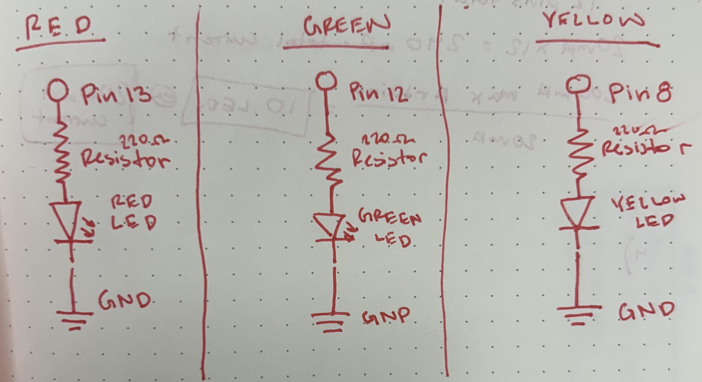

Circuit Gif

Resistor Calculation
To calculate the resistor value for each LED we need to know the voltage drop for red, green and yellow LEDs which are all 1.8V. We also know that each LED should run at a 20mA current and the Arduino gives 5 volts. Thus we use Ohm's law to calculate the resistor values:
V = I x R // Ohm's Law
V = V - Vf = 5 - 1.8 = 3.2 V
I = 20mA = 0.02A
R = V / I = 3.2V / 0.02A = 160Ω
I used 220Ω resistors for each LED because it is the closest value greater than 160Ω. Each LED gets it's own digital pin and resistor.
Circuit Image
Circuit
Schematic
Arduino Code
Each LED follows its respective blinking pattern. Red LED (Pin 13): Turns on for 1 second and then remains off for 2 seconds in each cycle. Green LED (Pin 12): Blinks twice, with each blink lasting 0.5 seconds, and then stays off for the rest of the cycle. Yellow LED (Pin 8): Turns on for 1 second after the Green LED finishes blinking and then turns off. This pattern repeats continuously.
// the setup function runs once when you press reset or power the board
void setup() {
// initialize digital pins as outputs.
pinMode(13, OUTPUT); // Red LED
pinMode(12, OUTPUT); // Green LED
pinMode(8, OUTPUT); // Yellow LED
}
// the loop function runs over and over again forever creating a blinking pattern
void loop() {
// Turns the RED LED on and then off
digitalWrite(13, HIGH); // turn the red LED on (HIGH is the voltage level)
delay(1000); // wait for a second
digitalWrite(13, LOW); // turn the red LED off by making the voltage LOW
// Makes the GREED LED blink twice
digitalWrite(12, HIGH); // turn the green LED on (HIGH is the voltage level)
delay(500); // wait for a .5 second / 500ms
digitalWrite(12, LOW); // turn the green LED off by making the voltage LOW
delay(500); // wait for a .5 second / 500ms
digitalWrite(12, HIGH); // turn the green LED on (HIGH is the voltage level)
delay(500); // wait for a .5 second / 500ms
digitalWrite(12, LOW); // turn the green LED off by making the voltage LOW
// Turns the YELLOW LED on and then off
digitalWrite(8, HIGH); // turn the yellow LED on (HIGH is the voltage level)
delay(1000); // wait for a second
digitalWrite(8, LOW); // turn the yellow LED off by making the voltage LOW
}
Additional Questions
Voltage vs Time Graph
The arduino digital pins outpus 5V voltages, but the voltage across the 3 LEDs when the LED's output is HIGH is the forward voltage (Vf) which is approximately 1.8V for Red, Green, and Yellow LEDs.
Total LEDs
How many LEDs could you blink independently with your Arduino? How much current would that draw?
There are 13 pin ports in the Arduino, thus you could theoretically connect 13 LEDs independently. But the the maximum current draw of the Arduino is 200mA. If each Arduino pin can safely provide 20mA of current then you can calculate the total limit of LEDs by:
200mA / 20mA = 10 LEDs
Current = 10 X 20mA = 200mA
You can blink 10 pins which would draw 200mA of current safely with our Arduinos.
Blinking Speed
How fast do you need to blink your LEDs until you no longer can tell that they are blinking?
People perceive binking at 60HZ which would be 60 blinks per 1 second which is 0.0167 seconds (16.7 milliseconds). Because each blink cycle consists of an HIGH phase and an LOW phase, each phase to need to last half of 16.7ms. Thus, we would need to blink our LEDs at 8.3ms
(1 / 60) = 0.0167s = 16.7ms
0.0167s / 2 = 0.0083s = 8.3ms